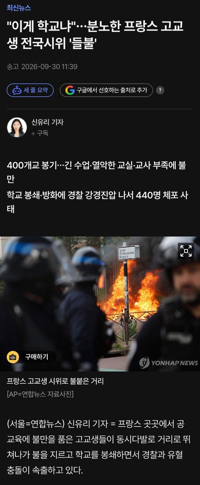

연금개혁은 안 하고 교육예산만 깎으니까 화끈하게 불 지르고 전통놀이 하는 중

연금개혁은 안 하고 교육예산만 깎으니까 화끈하게 불 지르고 전통놀이 하는 중
핫하고 뜨거워서 그런듯
어흐 뜨거워
쟤들보면 나라가 저러고도 돌아가? 싶을정도로 폭력적인 시위가 많음
돌아갈때까지 때리면 됨 ㅋㅋㅋㅋㅋㅋㅋㅋㅋㅋㅋㅋㅋㅋ
DNA에 남아있는 형용하지 못할 무언가
레볼루숑의 유전자
역시 불의 민족 불란서
저긴 공부 할 놈만 하는 나라인데도 그런가...?? (긴 수업이라고 말한 걸 보면....)
아니면 오히려 할 놈만 하는 나라라서 그런 건가...??
노동법을 고등학교 때 배우는 나라답게 롸끈하네
근데 진짜 배우긴 해야 하는데
혁명의나라 굿굿
프랑스에서는 자랑질하면 이상한사람 취급하고 줘터짐
학생들이 학생답네 부럽다

레볼루숑의 민족 ㅋㅋㅋㅋ
저게 한국이 배울 선진국 ㅋㅋㅋㅋ
아무리 봐도 21세기 문화혁명 같단 말이지 ㅋㅋㅋ
진짜 레볼루숑의 나라구나
쟤들은 진짜 자른다고!
전통놀잌ㅋㅋㅋㅋㅋㅋㅋ
ㅋㅋㅋㅋㅋㅋㅋㅋㅋㅋ
핫하네
핫해서 어흐인가?
목부터 자르는 종족이라
새키들 잘 자라서 강성노조 들어가면
볼만하겠네 ㅋㅋ
레볼루숑!
레볼루숑!!
진짜 핫 하네
프랑스는 핫해핫해 뎅겅뎅겅 화르륵~
저기는 진짜 시위 라고하면 일단 불부터 붙이고 시작인가보네 ㅋㅋㅋㅋㅋㅋㅋ
근데 어흐는 왜....????